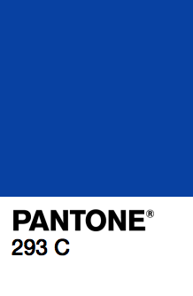

It is week #293 wrap-up. This week shares its name with the human embryonic kidney cells called HEK 293. This cell line has been used for many years due to its reliable growth and propensity for transfection. This week also celebrates its name with the PANTONE color 293 C, a good solid blue color.
Lots of little things this week. A few projects have ben green-lit, so things are starting to roll-in for Q4. We’ve also been prepping a lot for our trip next week to New York City. We’ll be presenting at the O’Reilly Strata conference about Data Visualizations using D3. A few meetings here and there and planning for when we’re back.
It was the equinox this week, so now in Iceland we’re officially getting darker. There is more darkness each day than light until the next equinox in six months time! The light curve is sinusoidal, which means right now we’re not in the peak or trough, but on the downward slope. We’re loosing a lot of time each day, the equinoxes are the fastest changes of the year and you can really feel it.
NASA
Recently, our Analog Notebooks project was mentioned by the HiRISE team at NASA. This week they got their notebooks in the mail and they seem very pleased! This brings us great joy to see people happy about something we made. @HiRISE, keep doing awesome space stuff!
2D Barcodes
We got a mention from Curtis Clay this week regarding a strange 2D barcode he found. He’s one of the curious ones who, when he sees a barcode has to scan it! To his surprise, it lead him to our website.
Firstly, we have nothing todo with this tour. Our guess is that someone did an image search for 2D barcodes and found an old article we wrote. They probably meant to use our image as a placeholder until they could generate their own. Then deadlines appeared, things got rushed, no one checked it and here it is, a link to our website on a VIP Tour badge. All-in-all, it probably tells you a few things. 1) No one ever scanned that badge, before, during or after the event. 2) Non-human readable data is a higher propensity to be wrong! If it is out of site, it is out of mind.
Icelandic Calendar
This Thursday was the start of Hausmanuður, the Autumn month. It is the last month in the 6-month summer calendar. Fall has certainly made its appearance this week with the changing leaves, temperature drop and cool, crisp air. In 30 days time, winter will officially start here in Iceland, according to the old Norse calendar. There are a few traditions starting to pop-up around town, but they aren’t openly connecting them to the First Day of Winter, even though they are. The First Day of Summer is something to celebrate and Iceland made it a public holiday, but First Day of Winter is less attractive, but we’re finding ways to celebrating it in its own way.
Bric-à-brac
If we ever get into video production, this is the sort of style we’d want the intros and outros to look like. Bright colors, flowing, churning, popping and blending all make for a mesmerizing experience.